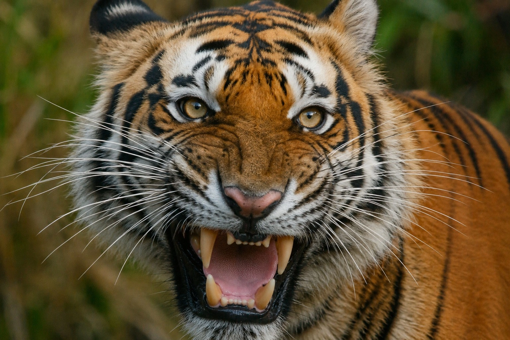
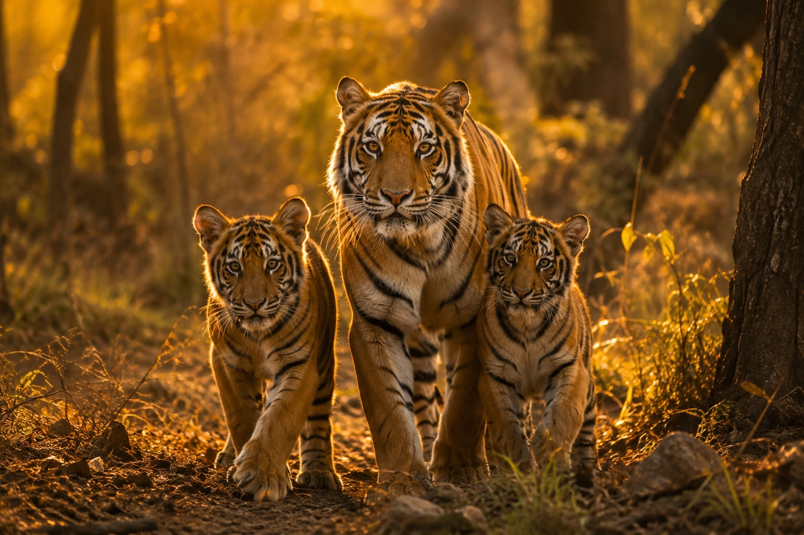
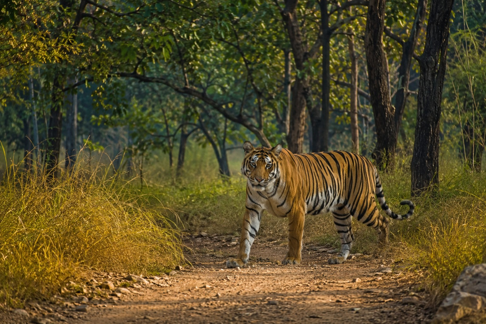

Diet and hunting behaviour, cub development, roar decibels, swimming ability, Bengal tiger vs lion, and its real IUCN conservation status — all in one place.
Home / Royal Bengal Tiger Guide / Facts
If you've already read our full Royal Bengal Tiger ecology & conservation guide, this page goes narrower and deeper — every fact people actually search for about what the tiger eats, how its cubs grow up, how it stacks up against a lion, and whether it's really endangered.
Before anything else, the numbers that everyone searches for: an adult male Royal Bengal Tiger weighs roughly 200-230 kg and measures close to 3 metres from nose to tail-tip, while females are noticeably smaller at around 120-160 kg. Its coat is a rich orange-rust colour broken by black stripes — and no two tigers share the same stripe pattern, exactly like a human fingerprint.

Royal Bengal Tigers are obligate carnivores and apex ambush predators. Their preferred prey includes Chital (spotted deer), Sambar deer, wild boar, and Gaur (Indian bison) — with Sundarbans tigers uniquely supplementing their diet with fish, mud crabs, and even water monitor lizards.
A tiger typically stalks prey to within 10-15 metres before launching a short, explosive charge, aiming for a fatal bite to the neck or throat. Hunts succeed roughly 1 in 10 to 1 in 20 attempts, which is why a tiger can eat up to 18-20 kg of meat in a single sitting and then fast for several days until the next successful kill.
A tigress gives birth to 2 to 4 cubs per litter after a gestation period of about 103-105 days, usually in a secluded den of tall grass, dense thicket, or a rocky cave. Cubs are born blind, deaf, and completely dependent on the mother.
| Age | Milestone |
|---|---|
| 0-10 days | Born blind and helpless; eyes remain closed, fully dependent on mother's milk. |
| 2 weeks | Eyes fully open; cubs begin crawling short distances inside the den. |
| 2 months | Start eating small amounts of meat alongside nursing; begin play-fighting with littermates. |
| 6 months | Begin accompanying the mother on hunts to observe and learn technique. |
| 18-24 months | Learn to hunt independently and gradually become capable of surviving alone. |
| 2-3 years | Leave the mother's territory permanently to establish their own range. |
Cub mortality in the wild is high — studies suggest fewer than half survive to independence, mainly due to territorial male tigers, starvation, or accidents, which is exactly why every surviving cub matters so much to conservation efforts.
Royal Bengal Tigers are solitary animals outside of mating season and cub-rearing — each adult maintains and fiercely marks an exclusive territory using scent-marking, scratch marks on trees, and vocal calls. A male's territory can range from 20 sq. km in prey-rich areas to well over 150 sq. km in sparser habitat, often overlapping with the smaller territories of 2-3 females.
Their roar is a defining trait — a low-frequency call that can hit roughly 114 decibels and travel up to 3 km on a calm night, produced using a specialised elastic ligament in the larynx that most cats don't have. Unusually for a big cat, Bengal tigers are also strong swimmers, comfortably crossing rivers and, in the Sundarbans, swimming between mangrove islands as a matter of routine.
This is one of the most asked questions about the species, so here's the honest, evidence-based answer rather than internet folklore:
| Trait | Royal Bengal Tiger | Asiatic / African Lion |
|---|---|---|
| Average Male Weight | 200-230 kg | 150-190 kg (Asiatic), up to 250 kg (African) |
| Hunting Style | Solitary ambush predator | Cooperative pride hunting |
| Combat Style | Relies on agility, raw strength, and a powerful bite | Relies on mane protection and pride-based aggression |
| One-on-One Outcome | Historically favoured in recorded captive/circus-era encounters | At a disadvantage without pride support |
In a genuine one-on-one confrontation, most big-cat experts favour the tiger for its size, strength, and combat agility. But in the wild, this comparison rarely matters — lions hunt and defend territory as a pride, which is precisely the advantage a solitary tiger doesn't have.
Yes — the tiger (Panthera tigris) is officially listed as Endangered on the IUCN Red List. India's population has climbed steadily since Project Tiger launched in 1973, reaching 3,682 tigers in the last official NTCA census (2022) — around 75% of the world's remaining wild tiger population. Even so, habitat fragmentation and human-wildlife conflict remain active, ongoing threats, which is why continued protection of reserves and wildlife corridors matters so much.
Facts and figures only go so far — nothing compares to watching a Royal Bengal Tiger cross a forest track in front of your jeep at first light. Corbett Tiger Reserve currently holds the highest tiger count of any single reserve in India.
Seeing hunting posture, roar, and cub behaviour on video makes these facts click a lot faster than text alone. Here are two clips from our YouTube channel.


Videos open on YouTube in a new tab so this page itself stays lightweight and fast to load.